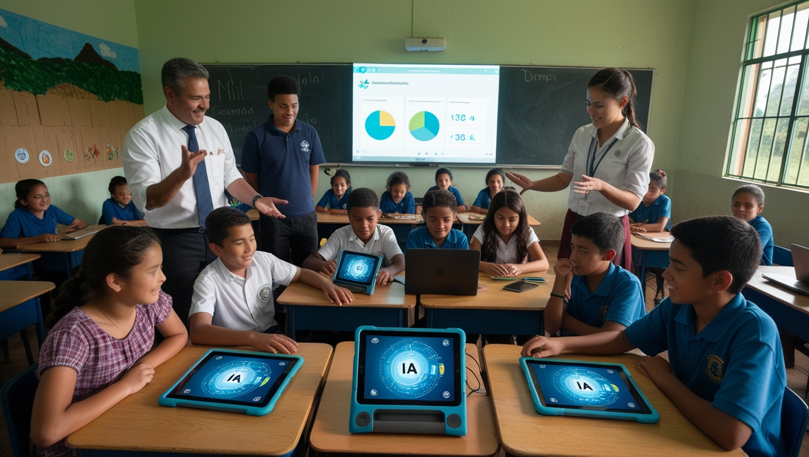

Nuestros Proyectos
Descubre los proyectos que estamos desarrollando para promover la enseñanza de la Inteligencia Artificial en América Latina.
Estudio para la Inclusión de inteligencia artificial en instituciones educativas de la provincia de Manabí.
Este proyecto tiene como objetivo principal integrar herramientas de IA en los procesos curriculares de las instituciones educativas de la provincia de Manabí, buscando mejorar la calidad de la enseñanza, reducir las brechas tecnológicas y fortalecer las competencias docentes. Este proyecto, relevante en una provincia con una población diversa, propone un diagnóstico participativo de la infraestructura tecnológica y una evaluación de la capacitación docente, seguido del diseño de módulos curriculares que integren la IA. Además, se implementará un programa de capacitación para docentes y se realizará una evaluación del impacto del proyecto. Se espera que esta iniciativa fortalezca las competencias tecnológicas de docentes y estudiantes, desarrolle recursos educativos adecuados y contribuya a la formulación de políticas públicas educativas, beneficiando a toda la comunidad educativa, incluyendo a las poblaciones más vulnerables de Manabí, y promoviendo una educación equitativa alineada con los Objetivos de Desarrollo Sostenible y el Plan Nacional de Desarrollo 2024-2025.

Este proyecto busca **mejorar la calidad educativa** mediante la integración de **inteligencia artificial (IA)**, optimizando la enseñanza, personalizando el aprendizaje y reduciendo brechas tecnológicas para una educación más equitativa e innovadora.
Sistema de Bibliotecas Autogestionadas (SBA).
El proyecto es una iniciativa innovadora para fomentar el hábito de la lectura en estudiantes de escuelas y colegios mediante la implementación de bibliotecas autogestionadas, compuestas por una estantería y dos juegos de mesas, abastecidas con libros donados por estudiantes, profesores y la comunidad. Sin necesidad de un encargado fijo, los propios estudiantes gestionarán, cuidarán y enriquecerán la biblioteca a través del intercambio y préstamo de libros, permitiéndoles llevarlos a casa y canjearlos por otros. Este modelo promoverá una cultura de aprendizaje autónomo y colaboración, fortaleciendo el pensamiento crítico y la adquisición de conocimientos que les serán útiles a lo largo de su vida. Además, al desarrollar habilidades de comprensión lectora, estarán mejor preparados para aprovechar el potencial de la inteligencia artificial, comprendiendo que la calidad de la información que proporcionemos a la IA determinará la calidad de los resultados que obtendremos.
Este proyecto busca fomentar la lectura y el aprendizaje autónomo mediante bibliotecas autogestionadas, donde los estudiantes pueden intercambiar y gestionar libros libremente, promoviendo una educación más equitativa, colaborativa e innovadora.